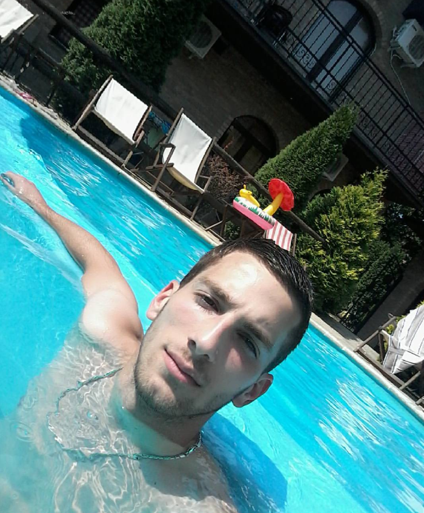
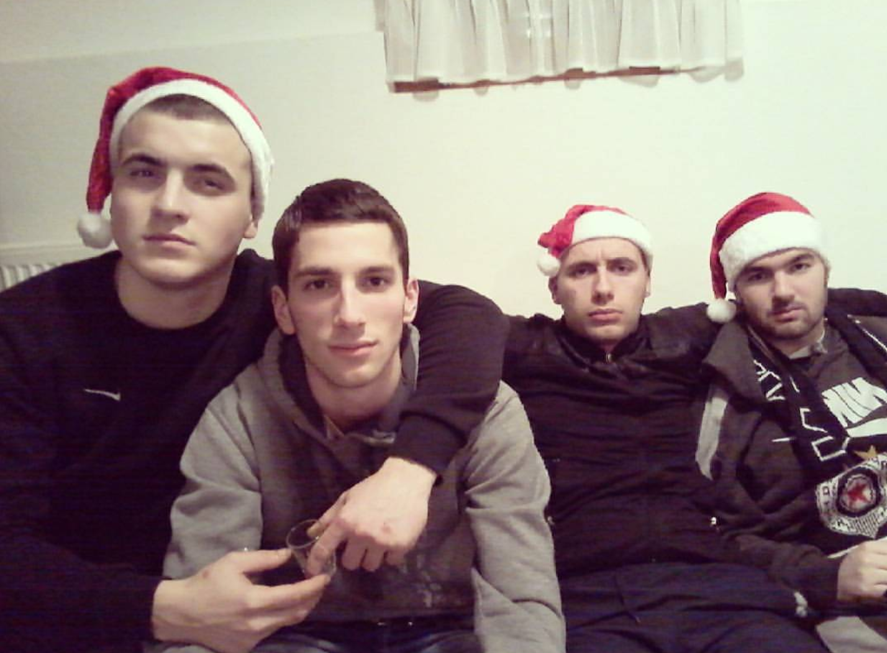
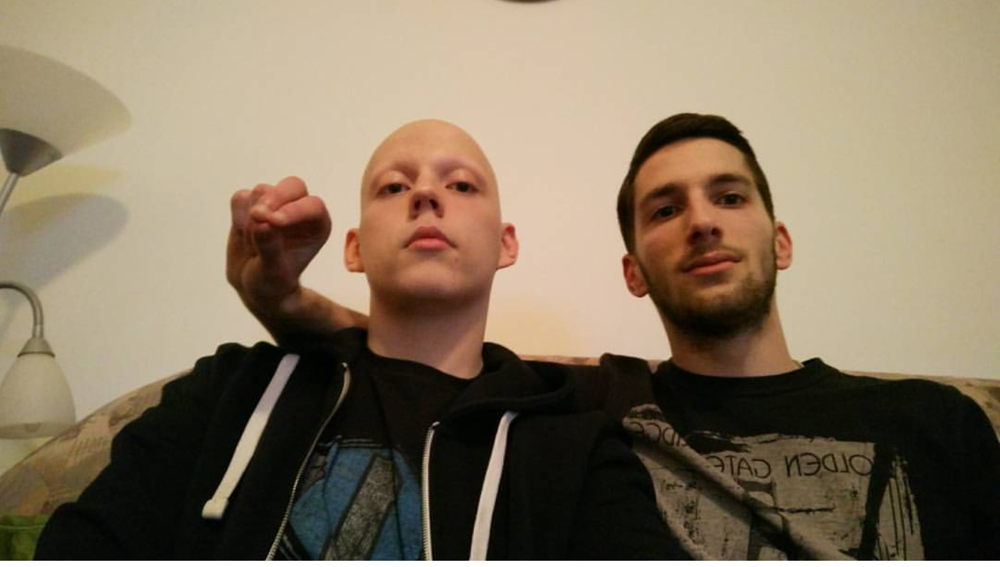
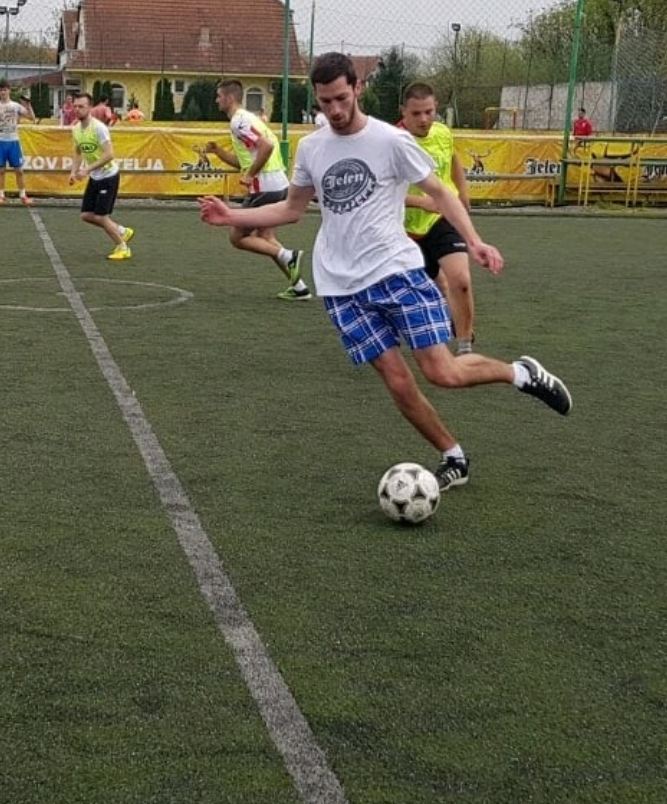
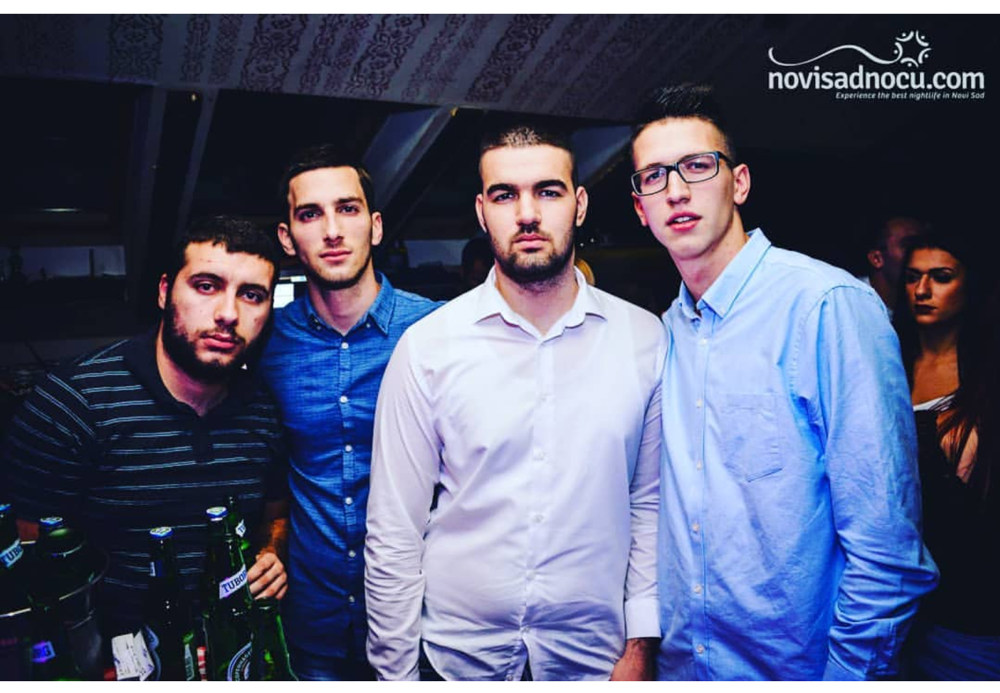
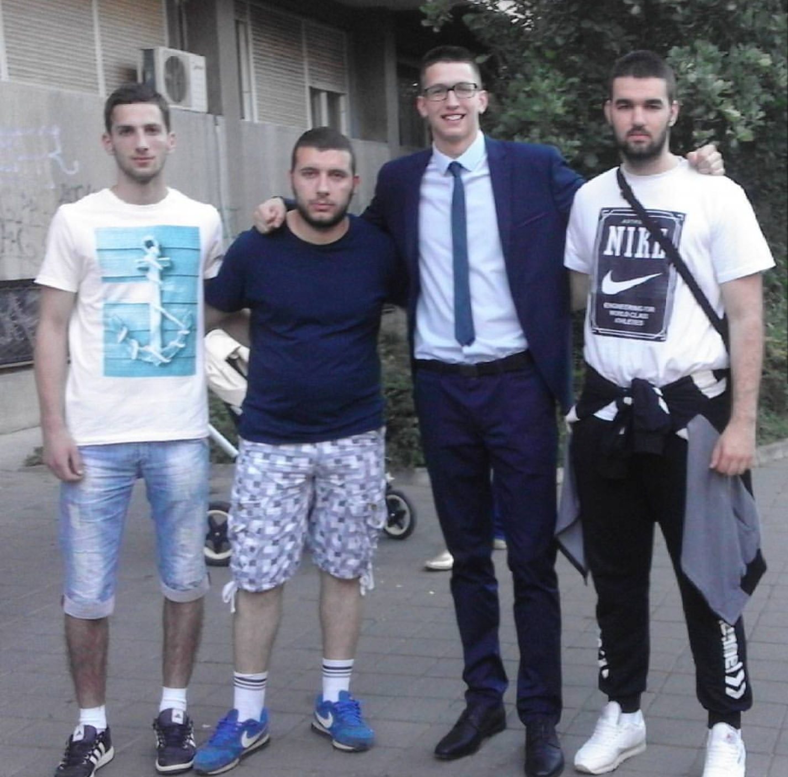
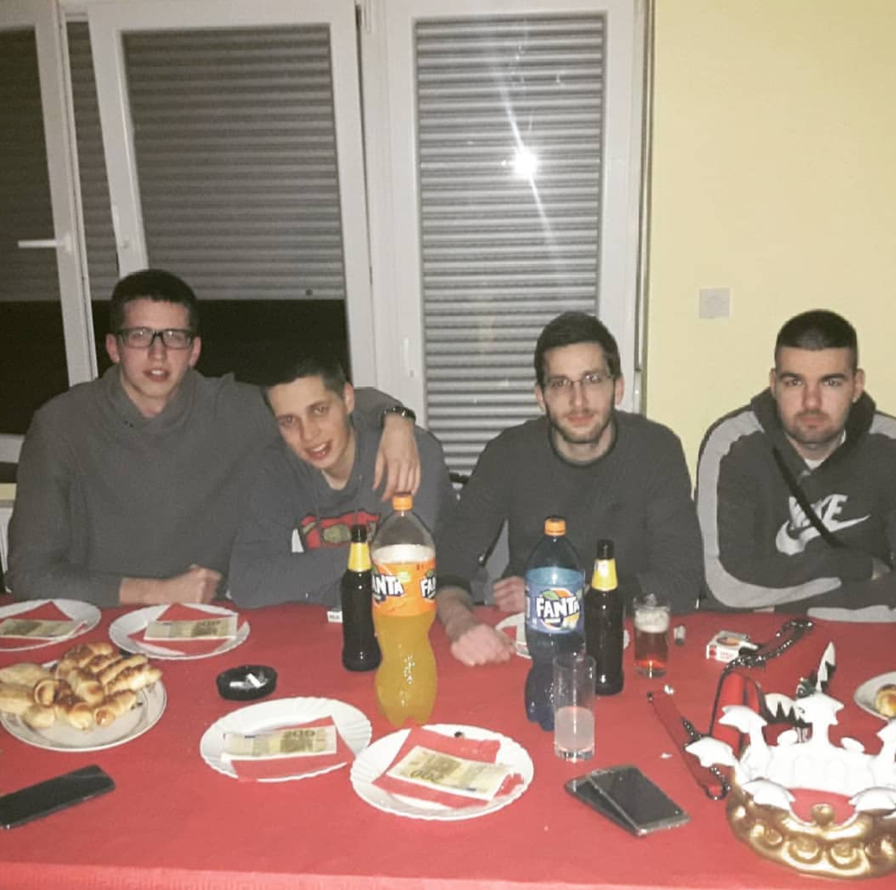

Milenko Ilić.
Student.
O meni
Kao što već znate ime mi je Milenko, a prezivam se Ilić, živim u prigradskom naselju Novog Sada koje se zove Bukovac i imam 21 godinu. Bukovac se nalazi na 9km udaljenosti od centra Novog Sada. Student sam treće godine Visoke poslovne skole strukovnih studija sa smera Primenjena informatika. Vannastavne aktivnosti uglavnom provodim gledajući filmove/serije, razne sportske događaje ili sa nekim od mnogobrojnog društva(ili sa svima zajedno). Cilj mi je da kada završim studiranje nađem posao u struci koji je vezan za web programiranje
Slike







Kontaktiraj me
Bukovac, Srbija
Telefon: +381695833352
Email: milenko.ilic997@gmail.com
Ostanimo u kontaktu. Pošalji mi poruku: